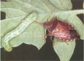
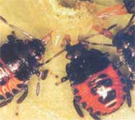
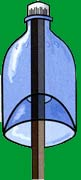

Attract These Good Bugs To Your Garden
February/March 2003
by Jeff Aldrich, Ph.D.
Make a homemade trap to collect these soldier bugs in early spring, then release them to control all kinds of garden pests.
As alternatives to toxic pesticides, scientists have developed a number of nontoxic lures to attract and trap pest insects. Perhaps most familiar are the Japanese beetle lures and traps. But these arid other pest lures usually dont work very well on the small scale of a home garden because they actually may attract more pests than initially were present.
There is one lure, developed by Jeff Aldrich, an entomologist with the U.S. Department of Agriculture, that attracts one of the best beneficial insects. Aldrich invites MOTHER EARTH NEWS readers to help hire test this nifty homemade Soldier Bug Trap arid Nursery Technique. - MOTHER
Spined soldier bugs (Podisus maculiventris) are valuable beneficial insects in home gardens because they prey on a multitude of pests, including Mexican bean beetles, cabbage loopers, diamondback moths, army worms and other caterpillars, flea beetles and Colorado potato beetles. When prey is not available, soldier bugs survive by feeding on plant sap, without significantly harming the plant.
Spined soldier bugs can be found throughout the United States and Canada. They are more common in the East, especially around deciduous forests and meadows, which provide natural prey and cover for the adults to survive the winter.
So how can gardeners enlist the soldier bugs at the right time to combat garden pests?
The Soldier Bug Nursery has shown promising results for home gardeners as a pest control technique. The technique relies on a pheromone (a natural chemical attractant) produced by male soldier bugs, which we identified and patented in our research at the U.S. Department of Agriculture/ Agricultural Research Station's Insect Behavior Lab. It is available commercially as the Soldier Bug Attractor (available from Planet Natural, www.planetnatural.com ). You can use the Attractor to draw spined soldier bugs to your garden at any time.
With the nursery technique, you can trap the soldier bugs when they first emerge in spring (before they lay their eggs), store them in a nursery cage or the refrigerator and then move them into your garden, where they will lay eggs and produce hundreds of hungry nymphs.
TRAPPING SOLDIER BUGS
Purchase the soldier bug pheromone lure to use in early spring. In nature, males use their pheromone to attract a mate, but other males also go to the vicinity of a calling male in an effort to intercept females. Spined soldier bug adults are strong fliers and, during responsive phases of their life cycle, will fly toward the pheromone from considerable distances.
Generally, soldier bugs are easy to capture. Because they will walk to the pheromone source, the traps for capturing soldier bugs must allow easy access while preventing their exit. The trap described at right takes advantage of the soldier bugs' tendency to crawl upward, but not downward.
Soldier bug Trap
1 Cut off the top third of a 2-liter soda bottle, and then cut off the screw-cap tip. This is your "funnel."

2 Cut off the top two-thirds of a second soda bottle, leaving the cap on. This is the trap body. Put a few small slits around the top to release the pheromone scent. Cut a wooden stake, about 3 feet long, that will fit through the hole in your funnel, but will allow at least 1/2-inch of clearance so the bugs can crawl in. Hammer the stake into the ground where you want to place the trap. The best sites are along the edges of wooded areas with plenty of brush and leaf litter.
3 Slide the funnel over the stake as shown.
4 Finally, lay a soldier-bug pheromone lure (not shown) in the trap's body. Slide the body onto the stake, and push the funnel section up into the bottom of the body. Tape or staple the bottom edges of the trap.
TRAP TIMING
Soldier bug adults overwinter under duff, fallen leaves and the bark of dead trees. Just prior to the bud burst of deciduous trees (a good indicator is when red maple trees shed their pollen), the adult bugs come out of their hibernation (known as diapause ) in a synchronized, massive emergence. Put your traps out before they emerge. The bugs soon mate, if they had not already done so the previous fall, and the females lay eggs on tree bark and vegetation (about 20 eggs per cluster; about 300 eggs per female). Eggs hatch in a week or less depending on temperature. There are five nymphal stages, each lasting about a week if the nymphs are well fed, followed by the final molt to the adult stage.
STORING AND USING SOLDIER BUGS
You can transfer the trapped bugs into a nursery area in your garden. The simplest nursery cage is a cylinder of aluminum window screen set upright over an area where insect prey may be present, such as a patch of an overwintered cover crop or kale. After making the cylinder, fold the top of the cylinder over and pin it shut with clothespins. Bank soil around the bottom of the cage so the adult bugs can't escape To assure the bugs have enough food if insect prey is scarce, place some apple slices in the nursery.
The window-screen cage will hold both adults and nymphs. If you want to move the nursery every few days to new crops, rattle the cage a bit: Most of the adult soldier bugs will fly up and land on the screen. Then you can move the nursery to a new location.
Make an even more effective nursery by using 1/8 inch hardware cloth instead of window screen. This material allows the soldier bug nymphs to escape and move out into the garden, while the larger adults stay confined and continue to lay eggs.
You also can keep trapped soldier bugs in the refrigerator for a few weeks to delay their egg-laying until more garden crops are up and growing. Every few days, take them out of the refrigerator for a few hours so they can warm up, drink and feed. Lightly mist them with water and give them some apple slices.
Later in the spring you can place the nursery cage right in the middle of your potato patch, or wherever you need pest control. Add the bugs you've been storing in the refrigerator: They will lay their eggs and their hungry little nymphs will protect your crops.
 An adult spined soldier bug uses its sharp proboscis to attack an unwitting caterpillar . |
 Even soldier bug nymphs are valiant garden-pest warriors. To learn more about soldier bugs, go to allserv.rug.ac.be/~padclerc |
 |
|
 |
|
|